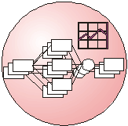
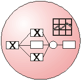
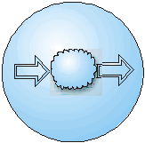

17º
SBRC – Simpósio Brasileiro de Redes de Computadores
www.dcc.unicamp.br/~931680/wonder
WONDER: A
Distributed Architecture for Large Scale Workflow Using CORBA
Roberto Silveira
Silva Filho, Jacques Wainer,
Edmundo R. M. Madeira
IC -Instituto de Computação
UNICAMP - Universidade Estadual de Campinas
13081-970 Campinas - SP - Brasil
{robsilfi, wainer, edmundo}@dcc.unicamp.br
Clarence Ellis
Department of Computer Science
University of Colorado, Boulder, CO 80309
skip@colorado.edu
Resumo
Os sistemas de gerenciamento de
workflow tradicionais (SGWFs), baseados na arquitetura
cliente-servidor centralizada, possuem uma limitação
intrínseca quanto à escalabilidade: o servidor central
representa um gargalo para aplicações de grande escala.
Representa, ainda, um único ponto de falha que pode desabilitar
todo o sistema. Neste contexto, é proposta uma arquitetura
completamente distribuída para SGWFs. Esta arquitetura se baseia
na idéia de que casos (instâncias de processos) migram de host
para host de acordo com um plano preestabelecido (definição de
processos) à medida em que as atividades são executadas. A
arquitetura é estendida de forma que outros requisitos dos SGWFs
são contemplados. Uma implementação em CORBA desta arquitetura
é discutida, tendo seus pontos positivos e negativos
apresentados.
Abstract
Standard client-server workflow
management systems have an intrinsic scalability limitation: the
central server is a bottleneck for large scale applications. It
is also a single fault point that may disable the whole workflow
system. We propose a fully decentralized architecture for
workflow management systems. It is based on the idea that the
case (an instance of the process) migrates from host to host,
according to the process definition specification, as the
corresponding activities are executed. This basic architecture is
improved so that other requirements for Workflow Management
Systems, besides scalability, are also contemplated. A
CORBA-based implementation of such architecture is discussed,
with both its limitations and positive points described.
Key Words: Large
Scale Workflow, Distributed Objects, CORBA, and Mobile Agents.
1. Introdução
1.1. Definição de Workflow
- A) Modelo empresarial
computadorizado que especifica todos os parâmetros envolvidos em
sua realização. Tais parâmetros incluem: interdependência de
tarefas, concorrência de atividades e decisões de trilhas a
seguir, etc.
- B) Descrição
computadorizada, interoperável de atividades e sua ordem
de execução.
1.2. Sistema de Gerenciamento
de Workflow (SGWf) (Workflow Management System (WFMS)):
- Conjunto de aplicações de
controle e interfaces para outras ferramentas e aplicações que
permitem o projeto, definição, execução e monitoramento de
workflows.
1.3. Termos Empregados
- Processo: (ou Definição
de Processo): é um workflow, uma descrição do processo
empresarial. É represantado por atividades, joins (pontos de
sincronização) e splits.
- Caso: é uma instância
de um processo.
- Atividades: Tarefas
predefinidas normalmente executadas por uma pessoa ou um
programa. Processos são definidos em termos de atividades.
- Papel: é uma descrição
geral de um conjunto de habilidades requeridas para o desempenho
de uma certa atividade.
- Atores: Pessoas ou
programas que realizam atividades.
2. Caracterização do Problema
Limitações dos Sistemas de
Gerenciamento de Workflow tradicionais:
- Arquitetura cliente-servidor
centralizada: Banco de dados, Controle, Dados de
definição e execução de processos, histórico de
execução e aplicações utilizadas no desempenho das
atividades do caso são centralizados e, em grande parte
dos casos, executados no servidor.
- Arquitetura centralizada
impõe um limite à execução simultânea de uma grande
quantidade de processos concorrentes. A interface com o
usuário é um dos itens normalmente prejudicados nestes
sistemas.
- O uso de um servidor central
possui limitações que o impedem de prover níveis
apropriados de tolerância a falhas e disponibilidade
para aplicações de larga escala: A falha do servidor ou
do link de comunicação com o servidor normalmente
paralisa todo o sistema.
- Falta de interoperabilidade com
outros SGWFs.
3. Principais Requisitos dos
SGWFs
– Capacidade de
integração com diferentes aplicações existentes:
Aplicações auxiliares como editores de texto e planilhas
eletrônicas são utilizadas durante a realização de muitas
tarefas.
– Interoperabilidade entre
diferentes sistemas de gerenciamento de Workflow: padrões de
interoperabilidade entre SGWfs de fabricantes diferentes devem
ser suportados de forma a viabilizar uma maior integração entre
SGWfs.
– Suporte a recuperação
de falhas: O SGWF deve ser capaz de lidar com falhas de
software e hardware de forma mais transparente possível para os
usuários do sistema, maximizando a disponibilidade do sistema.
– Escalabilidade: Grandes
empresas como bancos e companhias aéreas envolvem milhares de
usuários, centenas de milhares de processos concorrentes
distribuídos em milhares de sites. SGWfs devem suportar o
crescimento e as exigências de tais sistemas satisfazendo seus
requisitos de desempenho.
– Disponibilidade:
SGWfs devem prover mecanismos de tolerância a falhas, largura de
banda e redundâncias, de forma a impedir que falhas no sistema
paralisem os processos em andamento, indisponibilizando o sistema
por longos períodos de tempo.
– Rastreamento: Ao
lidarmos com processos longos e muitas vezes complexos,
mecanismos que possibilitem determinar o estado corrente dos
casos em execução são essenciais para o gerenciamento do
sistema, fornecendo dados para detecção de falhas e gargalos de
performance.
– Monitorização: A
manutenção do histórico das execuções dos processos em SGWfs
são importantes nos processos de otimização e reestruturação
dos processos de Workflow de uma empresa.
4. Modelo Proposto
De forma a satisfazer os
requisitos de escalabilidade e disponibilidade dos SGWFs de larga
escala a arquitetura WONDER (Workflow on Distributed
Environment).é proposta.
- Cada caso é um "objeto
móvel" que é transladado de host a host, ficando
próximos aos usuários, durante sua execução.
- O caso encapsula os dados
(arquivos, links, tabelas) e o plano (definição de
processo) necessários a sua execução. Estes dados são
movidos de host para host conforme as atividades vão
sendo executadas.
Para satisfazer os outros
requisitos descritos anteriormente alguns componentes são
adicionados ao modelo:
- Determinação de atores
em tempo de execução: papel auxiliado pelo Role
Coordinator.
- Monitoramento e
resolução de falhas: desempenhado pelos servidores:
Case Coordinator e Process Coordinator.
- Recuperação de Falhas:
utiliza dados e estado dos objetos armazenados no Backup
Server assíncrono, além da informação de cache
(objetos serializados localmente) armazenados nos hosts
envolvidos na execução das atividades, e do Case
Coordinator.
- Rastreamento:
realizado através de consultas a dados de execuções
passadas armazenadas no History Server.
- Suporte a mobilidade de
objetos: implementado através dos servidores Activity
Manager, Synchronization Activity e Gateway
Activity.
- Interface com o usuário:
Task List.
- Interoperabilidade:
possível através do uso de Gateway Activities.
5. Principais Componentes da
Arquitetura
 Process Coordinator (Coordenador de
Processos)
- Gerencia a definição de um
determinado processo.
- Responsável pela criação
de coordenadores de processos.
- Mantém informações dos
Coordenadores de caso por ele criados e que estão ativos
no sistema.
- O Coordenador de Processos
pode ser replicado em vários hosts de uma organização.
 Case Coordinator (Coordenador de Casos)
- Possui sua própria cópia da
definição de processo.
- Cria a primeira atividade e
os servidores de sincronização usados numa instância
de processo.
- Armazena informações sobre
uma instância particular de processo.
- Detecta falhas no sistema e
toma atitudes para recupera-las.
- Notifica o coordenador e
processo ao final do caso.
- Cada Coordenador de Caso pode
ser criado em um host diferente ou vários podem ser
criados em um único host.
Role Coordinator (Coordenador de Papéis)
- Responsável pelo
gerenciamento de usuários que podem desempenhar um
determinado papel.
- Pode, ainda ter acesso ao
servidor de histórico.
- Determina usuários para
desempenharem um determinado papel em tempo de execução
através de consultas.
- Pode ter divérsas políticas
de alocação de atores: "menos atarefado",
"round robin", "randômico", etc.
Synchronization Activity (Atividade de
Sincronização)
- Implementa AND e OR joins.
- Recebe notificações de
eventos externos.
Task List (Lista de Tarefas)
- Interface gráfica,
semelhante a de um aplicativo de correio eletrônico, de
comunicação entre o usuário e o sistema.
- Coleta e provê informações
sobre a carga de trabalho do usuário, políticas de
alocação de trabalho, prioridades das atividades do
usuário etc.
History Server (Servidor de Histórico)
- Front-end para o repositório
de dados de atividades terminadas.
- Armazena todos os dados
relevantes de um processo que terminou sua execução.
Disponibiliza os dados para consulta.
Backup Server (Servidor de Backup)
- Front-end para o repositório
de estado de execução e dados de atividades dos casos
ativos no sistema.
- Executa em uma máquina mais
estável e segura.
- Política de distribuição:
um por caso, um por grupo de casos, ou vários por um
único caso.
- Escolhido durante a criação
do caso, de acordo com a carga e disponibilidade, do
sistema, proximidade etc.
Activity Manager (Gerenciador de
Atividade)
- "Implementa" a
mobilidade de objetos da arquitetura WONDER, permitindo a
mobilidade de dados e definição de processos entre os
hosts do sistema. Não há mobilidade de código.
- A cada atividade está
associada um Activity Manager.
- Computa a próxima atividade
a ser executada.
- Determina, através de
consulta ao Coordenador de Papel específico, o usuário
a desempenhar a próxima atividade.
- Recebe requisições para
transferir dados a outras atividades.
Wrapper Activity.
- Controla a execução de um
aplicativo específico.
- É uma ponte entre o Activity
Manager e as aplicações usadas por uma atividade.
 Gateway Activity.
- Responsável pela conversão
bidirecional de definições de processos e dados entre o
WONDER e um SGWFs de outro fabricante.
6. Implementação em CORBA
6.1. Referências a Objetos
CORBA
- Um caso pode transcorrer
durante vários meses e até mesmo anos..
- Referências CORBA (GIOP) a
exemplo da IOR(Inter-operable Object Reference)
são muito transitórias para nossa aplicação.
- IORs possuem informações
como o host name onde o objeto se encontra e o port
number que identifica o objeto em seu host.
- Não podemos assumir que o
objeto permanecerá ativo, respondendo no mesmo port
number onde foi inicialmente criado, durante toda a
vida do caso.
6.1.1. Local Object Activator
(Ativador de Objetos Local)
- Implementa a persistência de
objetos CORBA
- Utiliza a seguinte hierarquia
de nomes:
(host, process, case, actor,
activity, file) para arquivos;
(host, process, case, actor,
activity) para atividades;
(host, process, case) para
coordenadores de casos;
(host, process) para
coordenadores de processos;
(host, backup-server) para
servidores de backup, etc.
7. Implementação
- O sistema está sendo
desenvolvido usando Java (Sun JDK1.1) e OrbixWeb3.1 da
Iona.
- O LOA (Local Object
Activator) é implementado através da implementação da
classe LoaderClass da OrbixWeb. Falhas do tipo
OBJECT_NOT_FOUND são direcionadas pelo orbixd (daemon da
orbix) para esta implementação que se encarrega de
tratar a exceção, ativando o objeto
"adormecido".
- Todos os objetos do Wonder
são periodicamente serializados.
6. Considerações Finais
6.1. A arquitetura WONDER
objetiva:
Satisfazer os principais
requisitos dos SGWFs, principalmente os de escalabilidade
e disponibilidade.
- WONDER objetiva alcançar
disponibilidade e escalabilidade através da
descentralização dos dados e da descentralização
quase total de controle do workflow.
- O controle centralizado é
substituído pelo gerenciamento hierárquico de casos que
possuem atividades semi-autônomas.
- A arquitetura é baseada na
idéia de que o caso move de host para host, ficando mais
próximo dos usuários que realizam as atividades do
caso.
- Um conjunto de coordenadores
e servidores são adicionados ao conjunto básico da
arquitetura (Activity Manager, LOA, ORB) de forma a
contemplar os outros requisitos dos SGWFs.
6.2. Problemas do uso de CORBA:
- CORBA ainda não define um
serviço de persistência de objetos padrão. Tal
persistência deve ser implementada de forma
proprietária, como um fator essencial para o esquema de
tolerância a falhas.
- O acesso a objetos CORBA é
feita através de um ativador de objetos, executando em
cada host, que se utiliza de um espaço de nomes
especialmente definido para esta aplicação.
Agradecimentos: Os
primeiros três autores gostariam de agradecer à FAPESP
(Processo 98/06648-0) , CNPq, CAPES (Processo 027/98), e o Pronex
– projeto SAE - MCT/Finep por seu apoio.